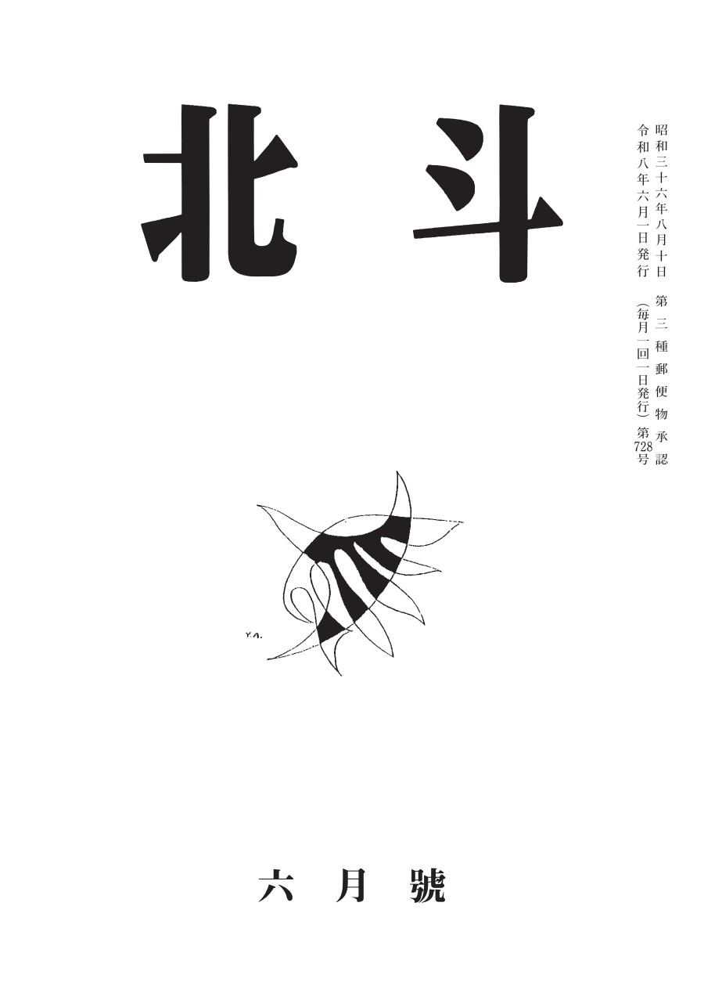
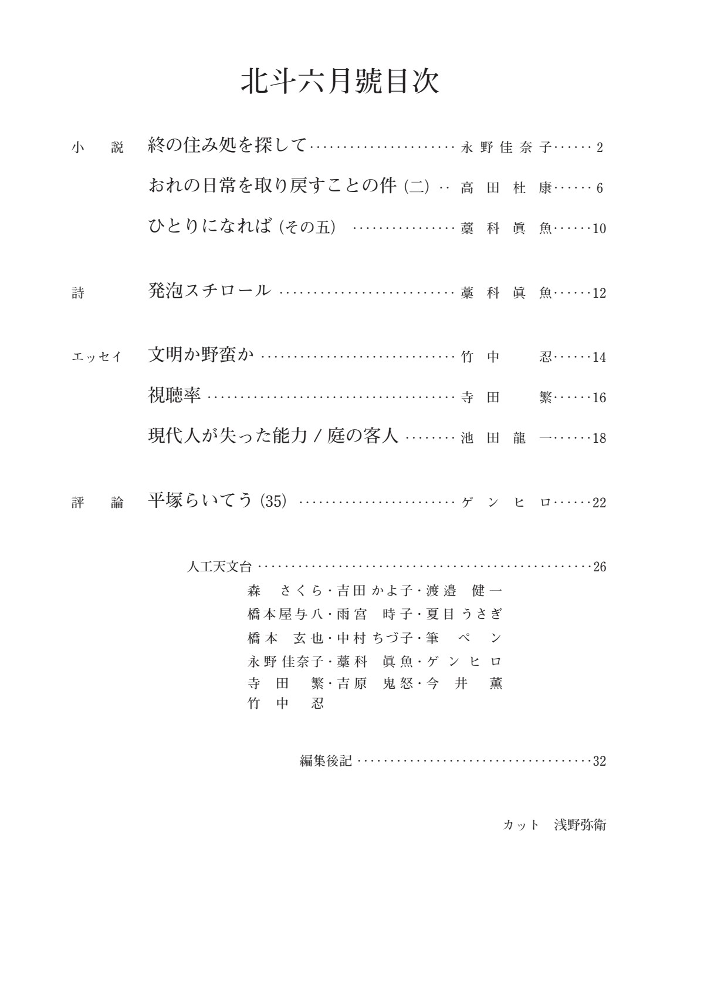

▶ 最新号のご案内

第728号 頒価：500円
目 次
小 説
| 終の住み処を探して | 永野佳奈子 | p.2 |
| おれの日常を取り戻すことの件（二） | 高田杜康 | p.6 |
| ひとりになれば（その五） | 藁科眞魚 | p.10 |
詩
| 発泡スチロール | 藁科眞魚 | p.12 |
エッセイ
| 文明か野蛮か | 竹中 忍 | p.14 |
| 視聴率 | 寺田 繁 | p.16 |
| 現代人が失った能力 ／ 庭の客人 | 池田龍一 | p.18 |
評 論
| 平塚らいてう（35） | ゲンヒロ | p.22 |
その他
| 人工天文台（同人エッセイ欄） | 森さくら 他 | p.26 |
| 編集後記 | p.32 |
カット：浅野弥衛

誌面の目次（クリックで拡大）
お知らせ・会合案内
- 2026年6月1日 NEW第728号（令和8年6月號）を発行しました。
- 会合案内 会合は名古屋市中生涯学習センター（地下鉄上前津6番出口より南へ250m）にて開催しています。日程は事務局までお問い合わせください。
- 同人・会員募集 小説・エッセイ・詩・評論など、ジャンルを問わず作品をお寄せいただけます。詳しくはお問い合わせより。